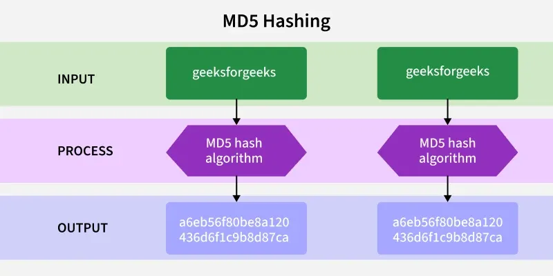
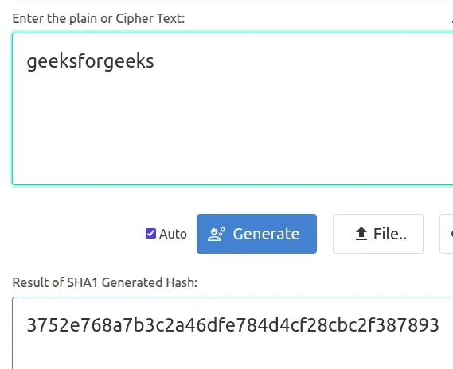
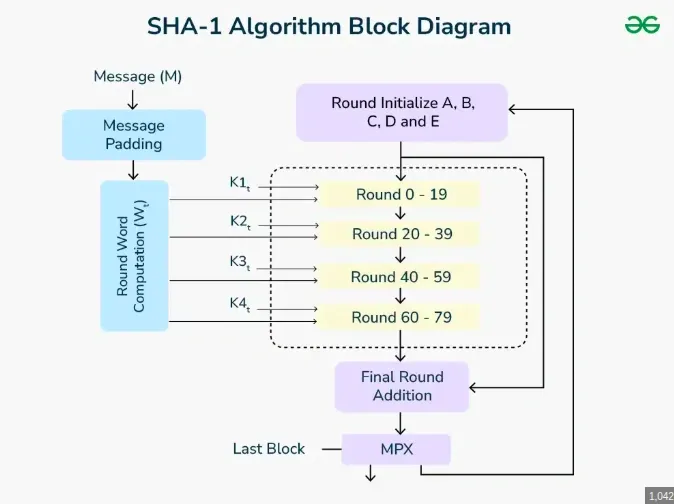
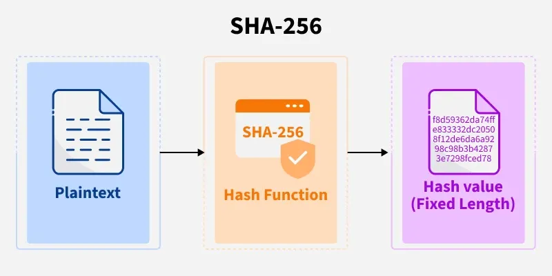
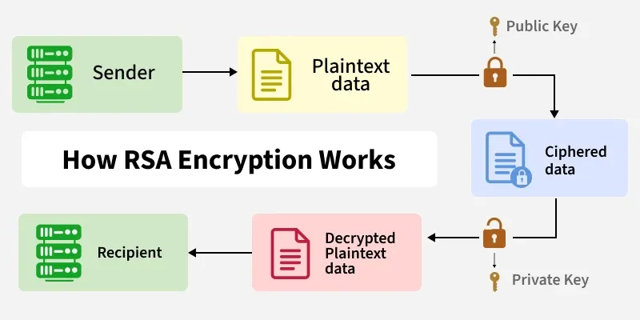
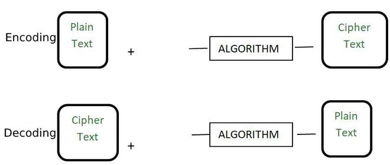
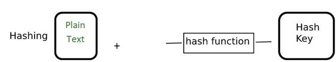

6. Hashing and Digital Signatures
- 6.1 Hash algorithms (MD5 → SHA-3) and evolution
- 6.2 Three security properties + avalanche effect
- 6.3 Birthday paradox and bit-strength math
- 6.4 MAC and HMAC (shared secret authenticity)
- 6.5 Digital signatures (sign → verify workflow)
- 6.6 RSA, DSA, ECDSA implementations
- 6.7 Summary matrix — hash vs HMAC vs signature
- 6.8 OpenSSL hands-on · 6.9 Password hashing
- 6.10 Digital signatures — components, assurances, applications
- 6.11 Digital certificates (CA, X.509)
- 6.12 Hashing vs encryption vs encoding
Overview
This topic is a dedicated deep dive into cryptographic hash functions, Message Authentication Codes (MACs), HMAC, and digital signatures. A brief introduction to hashing also appears in Topic 5 — Section 5.11. Here you get the full operational architecture, mathematical foundations, birthday-paradox analysis, enterprise comparison matrix, hands-on commands, digital certificates, and a full comparison of hashing vs encryption vs encoding.
6.1 Cryptographic Hash Functions: Operational Architecture
As established briefly in the cryptography overview, a Cryptographic Hash Function—often referred to as a mathematical "one-way engine"—is an algorithm that takes an input string of any arbitrary, variable length and transforms it into a fixed-length, immutable output string of bits or characters. This output is universally known as the Hash Value, Message Digest, Checksum, or Digital Fingerprint.
The Mathematical Engine: MD5, SHA-1, SHA-2, and SHA-3
┌────────────────────────────────────────────────────────┐ │ The Evolution of Hashing │ ├────────────────────────────────────────────────────────┤ │ MD5 (Broken, 128-bit) │ │ └──► SHA-1 (Broken, 160-bit) │ │ └──► SHA-2 (Secure, 256/512-bit, Block Chaining) │ │ └──► SHA-3 (Secure, Keccak Sponge Engine)│ └────────────────────────────────────────────────────────┘
MD5 (Message Digest 5): Designed by Ronald Rivest, MD5 produces a 128-bit hash value. It was once the global standard for file integrity verification and password storage. However, cryptanalysts uncovered severe structural flaws that allow for Collision Attacks (generating two completely different files with the exact same MD5 hash) in fractions of a second. It is now completely obsolete and strictly prohibited in professional security environments.

SHA-1 (Secure Hash Algorithm 1): Designed by the NSA, SHA-1 produces a 160-bit digest. Like MD5, it has been mathematically broken through practical collision exploits (e.g., the SHAttered attack). It is deprecated across all modern web browsers and security protocols.


SHA-2 (Secure Hash Algorithm 2): Also developed by the NSA, SHA-2 is a family of highly secure hash functions consisting of different digest sizes, most notably SHA-256 and SHA-512. It utilizes a complex structural design called the Merkle-Damgård construction, which processes data in successive blocks. It is the current industry workhorse, driving everything from HTTPS certificates to cryptocurrency ledgers.
Example (SHA-256):
- Data:
geeksforgeeks - SHA-256:
f8d59362da74ffe833332dc20508f12de6da6a9298c98b3b42873e7298fced78

SHA-3 (Secure Hash Algorithm 3): Released by NIST, SHA-3 does not rely on the Merkle-Damgård construction. Instead, it uses an entirely different internal mathematical design called the Keccak Permutation Sponge Engine. Because its underlying architecture is completely different from SHA-2, it serves as a secure backup; if an advanced cryptanalytic breakthrough ever breaks SHA-2, SHA-3 will remain completely unaffected.
6.2 The Three Properties of Secure Hashing (Mathematical Foundations)
For a mathematical function to be classified as a secure cryptographic hash, it must satisfy three strict computational barriers:
1. Pre-Image Resistance (The One-Way Property)
Given any arbitrary hash digest y, it must be computationally impossible for an adversary to reverse the math and find the original plaintext input string x such that:
The system must act as a true one-way street. The only way to find x without authorization should be an exhaustive brute-force search across the entire input space.
2. Second Pre-Image Resistance (Weak Collision Resistance)
Given a specific, known input string x₁ and its resulting hash digest Hash(x₁), it must be computationally impossible to find a completely different, independent input string x₂ such that their hashes are identical:
This ensures an attacker cannot intercept a known transaction file and swap it with a malicious file that mimics the original hash fingerprint.
3. Collision Resistance (Strong Collision Resistance)
It must be computationally impossible to find any two arbitrary, random, and completely distinct input strings x₁ and x₂ anywhere in the universe that yield the exact same output digest:
The Distinction: In Second Pre-Image Resistance, one input is locked and fixed from the start. In Collision Resistance, the attacker has total freedom to hunt for any pair of inputs that match. Breaking collision resistance is much easier due to a mathematical phenomenon known as the Birthday Paradox.
Properties at a glance
| Property | Attacker goal | Fixed input? |
|---|---|---|
| Pre-image resistance | Hash → find any original message | Digest fixed |
| Second pre-image | Given x₁, find different x₂ with same hash | Yes — x₁ locked |
| Collision resistance | Find any two messages that collide | No — hunt any pair |
Avalanche effect
A secure hash must exhibit the avalanche effect: a tiny change to the input (one character, case change, or extra period) must produce a digest that looks completely unrelated to the original output. This property supports integrity checking — tampering is immediately visible when comparing digests.
6.3 Understanding the Birthday Paradox and Hashing Strength
The Birthday Paradox is a fundamental probability concept that has a massive impact on the security parameters of hash functions.
The Core Concept: How many people do you need in a room to have a 50% chance that at least two people share the exact same birthday? While a non-mathematician might guess half of 365 (182), the true mathematical answer is just 23 people.
The Math: We are not looking for someone to match a specific birthday; we are looking for any two people in the room to match each other. The number of unique pairs among n people grows exponentially as:
Impact on Cryptanalysis and Hash Bit Length
This exact mathematical rule applies directly to hash collisions. An attacker does not need to crack a specific hash; they just need to find two random inputs that clash.
Because of the Birthday Paradox, the mathematical strength of a hash function against a collision attack is cut exactly in half relative to its bit length.
- If a hash function outputs an n-bit digest, a brute-force attack to find a Pre-Image (a specific match) requires 2n computational operations.
- However, finding a Collision (any arbitrary match) only requires: 2n/2 operations.
Collision attacks cost about 2n/2, not 2n. Halving the effective security bit length is why MD5 (128-bit → ~64-bit collision strength) failed.
Real-World Security Blueprint
Why MD5 (128-bit) Fell: Its collision security is cut down to 2128/2 = 264. A computing cluster can execute 264 operations very quickly, making MD5 highly vulnerable.
Why SHA-256 is Secure: Its collision security boundary drops to 2256/2 = 2128. An execution pool of 2128 operations is safely out of reach for modern computing clusters, keeping SHA-256 structurally secure.
6.4 Message Authentication Codes (MAC) vs. HMAC
Standard hashing protects against accidental corruption or data loss, but it fails if an active attacker intercepts the communication. If an attacker intercepts a file and modifies its contents, they can simply compute a new SHA-256 hash for the altered file and replace the original hash. The recipient's system will check the new file against the new hash and find no errors. To stop this type of tampering, systems use Message Authentication Codes (MACs).
Standard Hashing: [Plaintext Message] ──► [Hash Engine] ──► [Fixed Hash Digest]
HMAC Architecture: [Plaintext Message] ──┐
├──► [Hash Engine] ──► [Cryptographic HMAC]
[Secret Shared Key] ──┘
1. Message Authentication Codes (MAC)
A MAC is a security token that provides both Integrity and Data Origin Authentication. It ensures that data was not altered during transit and proves that the sender is authentic. Unlike a standard hash, computing a MAC requires two inputs: the plaintext message and a Secret Shared Key known only to the sender and the receiver.
2. HMAC (Hash-Based Message Authentication Code)
An HMAC is a specific, highly secure implementation of a MAC that wraps around a standard cryptographic hash function (like SHA-256).
The Nested Construction: You cannot simply glue a key to a message and hash it (Hash(Key ∥ Message)), because that structure is vulnerable to a cryptanalytic vulnerability called a Length-Extension Attack. To prevent this, HMAC uses a nested, two-pass mathematical design:
With Merkle-Damgård hashes (SHA-256), knowing Hash(secret ∥ message) can let an attacker append data and predict a valid extended hash without knowing the secret. HMAC’s inner/outer hash layers block this — never replace HMAC with raw Hash(key ∥ msg).
Where K is the secret key, M is the message, ipad is an inner padding constant, and opad is an outer padding constant.
The Verification Flow: The sender computes the HMAC using the shared key and sends it alongside the message. The recipient takes the incoming message, runs it through the exact same HMAC math using their copy of the shared secret key, and compares their result with the incoming HMAC token. If they match, the recipient is assured the message is authentic and unaltered.
Never use Hash(key ∥ message) alone — length-extension attacks break that. Use nested HMAC construction.
6.5 Digital Signatures: The Cryptographic Mechanics
A Digital Signature is an asymmetric cryptographic mechanism that binds an individual's or system's identity to a specific digital asset or data payload. While an HMAC relies on a symmetric shared key, a Digital Signature relies on an Asymmetric Key Pair.
Digital Signatures provide three critical security guarantees: Integrity, Authentication, and Non-Repudiation (which an HMAC cannot provide, since both parties share the exact same key).
The Complete Step-by-Step Execution Workflow
Phase 1: Generation (Signing) — Executed by Sender (Alice)
- Alice writes a plaintext message (M).
- Alice passes the message through a secure hash function (e.g., SHA-256) to generate a unique, fixed-size Message Digest (H). H = Hash(M)
- Alice encrypts this message digest using her unique, highly guarded Private Key (Kpriv_Alice). The output of this operation is the Digital Signature (S). S = EK_priv_Alice(H)
- Alice attaches the digital signature (S) to the original plaintext message (M) and sends the combined bundle across the network to Bob.
Phase 2: Verification — Executed by Receiver (Bob)
- Bob receives the plaintext message (M) and the attached digital signature (S).
- First Path: Bob takes the received plaintext message (M) and passes it through the exact same hash function (SHA-256) used by Alice to generate a Local Digest (H₁).
- Second Path: Bob takes the incoming digital signature (S) and decrypts it using Alice's openly available Public Key (Kpub_Alice). This reveals the Original Digest (H₂) that Alice computed. H₂ = DK_pub_Alice(S)
- The Evaluation: Bob compares the local digest (H₁) against the decrypted original digest (H₂).
- If H₁ == H₂, the signature is perfectly valid. Bob knows the data was not altered (Integrity) and that it was definitely created by Alice (Authentication and Non-Repudiation).
- If even a single character in the message was modified, or if a different private key was used, the hashes will not match, and the signature is rejected.
TLS/HTTPS certificate chains and PKIX trust are covered in Topic 5 — Section 5.14.
6.6 Practical Implementations of Digital Signatures
Modern enterprise systems implement digital signatures using three primary algorithmic styles:
1. RSA Signatures
How it works: Relies on the standard prime factorization math of the RSA algorithm. The message digest is padded (using standards like PKCS#1 v1.5 or RSA-PSS) and then processed through the sender's private key. It is widely compatible across global networks but requires large 2048-bit or 4096-bit keys, which can slow down high-volume processing environments.

Algorithm background: Topic 5 — RSA.
2. DSA (Digital Signature Algorithm)
How it works: A dedicated US Federal processing standard that relies on calculating modular exponentiation and discrete logarithms. DSA is designed exclusively for signing and cannot be adapted for standard data encryption.
See also: Topic 5 — DSA.
3. ECDSA (Elliptic Curve Digital Signature Algorithm)
How it works: Synthesizes the algebraic mechanics of DSA with the advanced efficiency of Elliptic Curve Cryptography (ECC).
The Enterprise Value: ECDSA delivers exceptional security margins using tiny key lengths (e.g., a 256-bit ECDSA key matches the security of a 3072-bit RSA key). This results in faster processing speeds, minimal memory use, and significantly lower network bandwidth requirements, making it the preferred standard for HTTPS certificates, modern operating system updates, and mobile banking applications.
ECC background: Topic 5 — Elliptic Curve Cryptography.
4. Ed25519 (modern alternative)
Ed25519 is a widely deployed Edwards-curve signature scheme built on Curve25519. It offers fast signing/verification, small keys and signatures, and resistance to several implementation pitfalls seen in older ECDSA deployments. It appears in SSH keys, modern TLS stacks, and cryptocurrency protocols alongside ECDSA.
6.7 Architectural Summary Matrix: Hashing, HMAC, and Digital Signatures
| Security Attribute | Cryptographic Hash (SHA-256) | HMAC (Hash + Shared Secret Key) | Digital Signature (ECDSA/RSA) |
|---|---|---|---|
| Key Architecture | No keys used. Operates entirely on open math. | Single Symmetric Shared Secret Key used by both parties. | An Asymmetric Key Pair (Private Key signs, Public Key verifies). |
| Primary Core Function | Basic data integrity checking (detects accidental corruption). | Data Origin Authentication and tamper-detection. | Non-Repudiation, identity verification, and data integrity. |
| Non-Repudiation Capability | No. Anyone can run the open hash on any file. | No. Because two parties share the key, either party could forge the token. | Yes. Only the owner possesses the private key that generated the signature. |
| Standard Enterprise Uses | Storing hashed passwords, verifying ISO downloads. | API request validation, secure webhook routing. | SSL/TLS browser handshakes, signing software updates. |
Hash = integrity only. HMAC = integrity + shared-secret authenticity. Digital signature = integrity + identity + non-repudiation.
6.8 Hands-on: OpenSSL Hash and HMAC
Hash and HMAC
# SHA-256 digest of a string
echo -n "geeksforgeeks" | openssl dgst -sha256
# SHA-256 of a file (integrity check)
openssl dgst -sha256 myfile.iso
# HMAC-SHA256 with a shared secret (demo key only)
echo -n "message body" | openssl dgst -sha256 -hmac "shared-secret-key"
# List supported digests
openssl dgst -list
Generate key pair and sign a file (RSA)
# Create 2048-bit RSA private key
openssl genrsa -out private.pem 2048
# Extract public key
openssl rsa -in private.pem -pubout -out public.pem
# Sign SHA-256 digest of document (PKCS#1 v1.5)
openssl dgst -sha256 -sign private.pem -out document.sig document.txt
# Verify signature
openssl dgst -sha256 -verify public.pem -signature document.sig document.txt
CyberChef (browser)
Open CyberChef and try:
- SHA-256 on
geeksforgeeks— compare with the digest in §6.1. - HMAC — enter a message and passphrase; observe how changing one character changes the tag.
- Generate RSA Key Pair (optional) — explore how signing keys differ from encryption use cases.
For TLS certificates and signed software updates, see Topic 5 — HTTPS and E2EE.
6.9 Password Storage and Salted Hashes
Storing passwords with a plain hash (even SHA-256) is unsafe: identical passwords yield identical digests, and attackers use rainbow tables or GPUs to crack millions of hashes per second. Production systems use password hashing functions designed to be slow and memory-hard.
| Approach | Status | Notes |
|---|---|---|
| Plaintext password | Never | Instant breach impact |
| MD5 / SHA-256 alone | Obsolete for passwords | Too fast; no per-user salt |
| bcrypt / scrypt / Argon2 | Recommended | Salt + tunable work factor |
| HMAC with server pepper | Sometimes layered | Extra secret stored outside the DB |
Salt: A unique random value per user, stored alongside the hash, so two users with the same password get different stored values. Work factor: bcrypt/Argon2 parameters that slow brute-force on stolen databases.
Hash algorithm walkthroughs with diagrams: Topic 5 §5.11.
6.10 Digital Signatures: Components, Assurances, and Applications
Alice/Bob sign-and-verify walkthrough with diagrams: §6.5 Digital Signatures: The Cryptographic Mechanics.
Digital signatures and digital certificates are two fundamental technologies used to ensure security, authenticity, and trust in online communication. They are widely used in areas such as online banking, secure emails, software distribution, e-commerce, and electronic document signing.
By providing authentication, integrity, confidentiality, and non-repudiation, these technologies help protect data from tampering, impersonation, fraud, and unauthorized access in digital environments.
Digital Signature
A digital signature is a cryptographic technique used to verify the authenticity, integrity, and non-repudiation of a digital message or document. It ensures that the message was created by a known sender and that it has not been altered during transmission.
Key Components of Digital Signature
1. Key Generation Algorithm
Digital signatures use asymmetric cryptography, which involves a pair of keys:
- Private Key: Kept secret by the owner and used to create the signature.
- Public Key: Shared with others and used to verify the signature.
This key pair ensures secure authentication during digital transactions.
2. Signing Algorithm
To create a digital signature:
- A hash function is applied to the original message to generate a fixed-length value called a message digest.
- This message digest is then encrypted using the sender's private key.
- The encrypted hash value forms the digital signature.
Instead of encrypting the entire message, only the hash is encrypted because:
- Hash values are much shorter
- Hashing is faster than encryption
- It improves efficiency without reducing security
3. Signature Verification Algorithm
At the receiver's side:
- The digital signature is decrypted using the sender's public key, producing the original message digest.
- The receiver independently computes the hash of the received message using the same hash function.
- Both hash values are compared:
- If they match → signature is valid
- If they differ → message integrity is compromised
How Digital Signature Works
The process of creating and verifying a digital signature involves the following steps:
- The sender computes a message digest using a one-way hash function.
- The message digest is encrypted using the sender's private key, forming the digital signature.
- The sender transmits:
- Original message
- Digital signature
- The receiver decrypts the digital signature using the sender's public key.
- The receiver computes a fresh message digest from the received message.
- If both message digests are identical, integrity and authenticity are verified.
A one-way hash function ensures that:
- Hash computation is easy
- Retrieving the original message from the hash is computationally infeasible
Working of Digital Signature
Sender → Hash → Encrypt with Private Key → Digital Signature Receiver → Decrypt with Public Key → Compare Hashes → Verify
Digital Signature vs Electronic Signature
A digital signature is a specific type of electronic signature that uses cryptographic algorithms and key pairs to provide strong security guarantees.
An electronic signature is a broader term that includes any electronic indication of agreement, such as:
- Typing a name
- Clicking an "I Agree" button
- Uploading a scanned handwritten signature
Electronic signatures may not always provide cryptographic security and are often used for non-sensitive agreements, whereas digital signatures are used for high-security and legally sensitive documents.
Assurances Provided by Digital Signatures
Digital signatures provide the following assurances:
- Authenticity: Confirms the identity of the signer.
- Integrity: Ensures the content has not been altered.
- Non-repudiation: Prevents the signer from denying having signed the document.
- Notarization: In certain cases, time-stamped digital signatures can serve as legally recognized notarization.
Benefits of Digital Signatures
- Legal Documents and Contracts: Digital signatures are legally binding and tamper-proof.
- Sales Agreements: Ensures trust between buyer and seller.
- Financial Documents: Prevents fraud in invoices and payment requests.
- Healthcare Data: Protects patient records and research data from unauthorized modification.
Drawbacks of Digital Signatures
- Technology Dependency: Vulnerable if systems are poorly secured or outdated.
- Complexity: Setup and usage may be difficult for non-technical users.
- Limited Adoption: In developing regions, lack of infrastructure may slow adoption.
6.11 Digital Certificates
A digital certificate is an electronic document issued by a trusted third party known as a Certificate Authority (CA). It verifies the identity of an individual, organization, or website and binds that identity to a public key.
Digital certificates enable secure communication by establishing trust between communicating parties.
Contents of a Digital Certificate
A digital certificate typically includes:
- Name of the certificate holder
- Unique serial number
- Validity period (issue and expiration dates)
- Public key of the certificate holder
- Digital signature of the Certificate Authority
The certificate is often transmitted along with digital signatures and encrypted messages.
Advantages of Digital Certificates
- Network Security: Protects against man-in-the-middle and impersonation attacks.
- Authentication: Enables strong identity verification across networks.
- User Trust: Browser-trusted certificates assure users that websites are legitimate.
Disadvantages of Digital Certificates
- Phishing Attacks: Attackers may obtain certificates for fake websites.
- Weak Encryption: Older certificates may use outdated algorithms.
- Misconfiguration: Improper setup can expose systems to attacks.
Digital Certificate vs Digital Signature
Digital certificates and digital signatures serve different purposes but are closely related.
| Feature | Digital Signature | Digital Certificate |
|---|---|---|
| Definition | Ensures integrity and authenticity of a document | Verifies identity of an entity |
| Purpose | Message verification | Identity verification |
| Generated By | Sender using private key | Certificate Authority |
| Standard | Digital Signature Standard (DSS) | X.509 |
| Security Services | Integrity, authenticity, non-repudiation | Authentication and trust |
TLS/HTTPS certificate chains and PKIX trust: Topic 5 — Section 5.14.
6.12 Difference Between Hashing, Encryption, and Encoding
Encryption, hashing, and encoding are three different methods of transforming data, each serving a unique purpose. While encryption protects confidentiality, hashing ensures integrity, and encoding focuses on safe data representation.
- Encryption: reversible, protects data secrecy
- Hashing: one-way, ensures integrity and verification
- Encoding: reversible, ensures data compatibility and formatting
What is Encryption?
Encryption is the process of converting readable plaintext into unreadable ciphertext, which can be reversed only with the correct key. It is used to protect sensitive data during storage or transmission.
- Reversible with a key
- Protects confidentiality
- Used in secure communication and data protection
- Algorithms include AES, RSA, and Blowfish

Full encryption process and diagrams: Topic 5 — Section 5.4.
What is Hashing?
Hashing converts data into a fixed-length, irreversible value called a hash. It is used for integrity checks, password storage, and fast lookup.
- One-way transformation
- Ensures integrity (detects changes)
- Fixed-length output regardless of input size
- Algorithms include SHA-256, MD5

Operational depth: §6.1 Cryptographic Hash Functions.
What Is Encoding?
Encoding transforms data into a different format for safe transmission or storage. It is not a security mechanism and is fully reversible without a key.
- Reversible without a key
- Ensures data compatibility and formatting
- Used for data transport, not security
- Examples include Base64, URL encoding, ASCII
Difference Between Hashing, Encryption and Encoding
Below are some key differences:
| Aspect | Hashing | Encryption | Encoding |
|---|---|---|---|
| Process | One-way conversion of data into a fixed-length value. | Converts plaintext into ciphertext using a key (reversible). | Converts data to another format for compatibility (reversible). |
| Purpose | Used for integrity verification and password storage. | Used for confidentiality and secure communication. | Used for data formatting, transmission, and storage. |
| Reversibility | Cannot be reversed only compared. | Can be reversed using the correct key. | Can be reversed without any key. |
| Output size | Produces fixed-size output. | Output is same size or larger than input. | Output often becomes larger than input. |
| Key | No secret key required. | Requires encryption & decryption keys. | No key required. |
| Examples | MD5, SHA-256. | AES, RSA. | Base64, URL. |
- Hash = one-way fingerprint; MD5/SHA-1 broken; SHA-256/SHA-3 are current standards.
- Pre-image, second pre-image, and collision resistance — collisions cost ~2n/2.
- HMAC = hash + shared secret; blocks length-extension; used for APIs and webhooks.
- Digital signature = hash + private-key operation; gives non-repudiation (RSA, DSA, ECDSA, Ed25519).
- Pick tool by need: integrity only → hash; shared secret auth → HMAC; public identity → signature.
- Passwords need salted bcrypt/Argon2 — not raw SHA-256.
- Digital signature ≠ electronic signature — only DS gives cryptographic non-repudiation.
- Digital certificate (X.509, CA) binds identity to a public key; signature verifies a specific message.
- Encoding (Base64, URL) is not encryption — no key, not for secrecy.